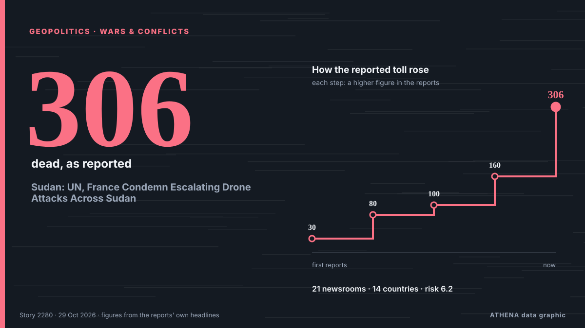

Sudan: UN, France Condemn Escalating Drone Attacks Across Sudan

A drone strike on a cattle market in Sudan’s Nyala has killed 30 people and wounded 47, as fighting between the army and the RSF intensifies. από The New Arab
Αναφέρθηκε ανεξάρτητα από 21 μέσα σε 14 χώρες από τις 15 Οκτ, πρώτο από το Radio Dabanga· η κάλυψη εξασθενεί. Το ATHENA εκτιμά τον κίνδυνο υψηλό (6.2/10), κυρίως λόγω της σοβαρότητας της βλάβης που περιγράφεται και της γεωγραφικής και τομεακής εμβέλειάς του. Η βεβαιότητα είναι 94% (υψηλή), καθώς το επιβεβαιώνουν 21 ανεξάρτητα μέσα με μέση αξιοπιστία πηγών 78%.
Γιατί έχει σημασία: Οι εξελίξεις στην ασφάλεια και τη διπλωματία μπορούν να μετατοπίσουν συμμαχίες, εμπόριο και αγορές πολύ πέρα από τις χώρες που εμπλέκονται.
Τι άλλαξε: 6 νέες αναφορές από 4 μέσα στο 24ωρο έως 29 Οκτ.
Πρώτη διατύπωση: Sudan drone strikes kill 306 in three weeks, UN rights body says
Οι τίτλοι των ειδήσεων παρουσιάζονται στα αγγλικά, όπως δημοσιεύτηκαν.
Με μια ματιά
Επιλέγεται, βαθμολογείται και γράφεται από τη δημοσιευμένη μεθοδολογία του ATHENA. Κανένας συντάκτης δεν παρεμβαίνει σε μεμονωμένα γεγονότα. Πώς παράγεται ›
| 15 Oct 15:18 UTC | 1 |
|---|---|
| 16 Oct 15:18 UTC | 2 |
| 17 Oct 15:18 UTC | 0 |
| 18 Oct 15:18 UTC | 5 |
| 19 Oct 15:18 UTC | 7 |
| 20 Oct 15:18 UTC | 4 |
| 21 Oct 15:18 UTC | 0 |
| 22 Oct 15:18 UTC | 3 |
| 23 Oct 15:18 UTC | 1 |
| 24 Oct 15:18 UTC | 2 |
| 25 Oct 15:18 UTC | 1 |
| 26 Oct 15:18 UTC | 7 |
| 27 Oct 15:18 UTC | 5 |
| 28 Oct 15:18 UTC | 6 |
| 29 Oct 15:18 UTC | 2 |
| 17 Oct 11:29 UTC | 5.4 |
|---|---|
| 17 Oct 14:01 UTC | 4.9 |
| 19 Oct 15:54 UTC | 5.9 |
| 29 Oct 22:28 UTC | 6.2 |
Γιατί αυτοί οι αριθμοί
Σημασία
Κίνδυνος
Βεβαιότητα
Η κάλυψη — ποιος το ανέφερε και πότε
ο τίτλος όπως δημοσιεύτηκε · ανοίγει το πρωτότυπο- Radio Dabanga · Σουδάν · SudanDrone attack kills two in North Darfur as Red Crescent volunteer killed in Blue Nile
- Radio Tamazuj · Νότιο Σουδάν · South SudanAt least 30 killed in drone strike in Nyala, South Darfur
- The New Arab · INTDrone strike kills 30 at cattle market in Sudan's Darfur
- Radio Dabanga · Σουδάν · SudanDrone strikes kill civilians in Darfur and Kordofan as attacks target eastern Sudan
- Radio Tamazuj · Νότιο Σουδάν · South SudanDrone strike kills at least 10 civilians in West Darfur
- UN News · Ηνωμένες Πολιτείες · United StatesUN condemns deadly wave of drone strikes in war-torn Sudan
- France 24 English · Γαλλία · FranceDrone attacks kill scores in Sudan's West Kordofan state and capital Khartoum
- The Guardian · Ηνωμένο Βασίλειο · United KingdomDrone attack near market kills 80 in Sudan
- Arab News · Σαουδική Αραβία · Saudi ArabiaDrone strikes across Sudan kill more than 100
- Anadolu Agency (English) · Τουρκία · TurkeyUN condemns deadly drone strikes across Sudan
- ABC News (International) · Ηνωμένες Πολιτείες · United StatesSudan drone attacks kill 3 children in Khartoum, dozens of civilians in Kordofan
- The New Arab · INTDrone strikes across Sudan kill more than 160 in past days
- Asharq Al-Awsat (English) · Σαουδική Αραβία · Saudi ArabiaDrone Strike in Disputed Sudan-South Sudan Area Kills Dozens, Minister Says
- Radio Dabanga · Σουδάν · SudanSudan war: Drones rain death on Khartoum, Darfur, Kordofan, Blue Nile
- Radio Dabanga · Σουδάν · SudanUN condemns deadly drone strikes on Sudan civilians
- CGTN (World) · Κίνα · ChinaUN condemns drone strikes in Sudan
- Africanews (English) · AFRUnited Nations condemns drone strikes on civilians and infrastructure in Sudan
- Sky News (World) · Ηνωμένο Βασίλειο · United KingdomAt least 153 people killed in drone strike on disputed Sudan-South Sudan region
- The Africa Report · Γαλλία · FranceSudan army strike in disputed territory kills 153: local authorities
- Arab News · Σαουδική Αραβία · Saudi ArabiaDrone strike kills four in Chad town near Sudan
- UN News · Ηνωμένες Πολιτείες · United StatesSudan: Drone strikes killed at least 306 people in three weeks
- Anadolu Agency (English) · Τουρκία · TurkeyUN rights chief 'strongly' condemns surge in drone strikes across Sudan
- The Rio Times · Βραζιλία · BrazilSudan Drone Strikes Kill 306 in October
- Radio Tamazuj · Νότιο Σουδάν · South SudanSudan drone strikes kill 306 in three weeks, UN rights body says
- Radio Dabanga · Σουδάν · SudanUN human rights chief: ‘Sudan drone strikes killed 306 in three weeks’
- AllAfrica · AFRSudan: 'Sudan Drone Strikes Killed 306 in Three Weeks' - UN Human Rights Chief
- Arab News · Σαουδική Αραβία · Saudi ArabiaDrone strike on Sudan’s Nyala kills 21, injures 40: medical source
- Asharq Al-Awsat (English) · Σαουδική Αραβία · Saudi ArabiaSudan Drone Strikes Kill 21, Cause Mass Outages in East
- Al Jazeera English · Κατάρ · QatarDrone strike in Sudan’s Nyala kills at least 21, injures 40
- Dawn · Πακιστάν · PakistanSudan drone strikes kill 21, cause mass outages in east
- Channels TV · Νιγηρία · NigeriaSudan Drone Strikes Kill 21, Cause Mass Outages In East
- Radio Tamazuj · Νότιο Σουδάν · South SudanScores killed in drone strike on Nyala market, South Darfur
- Radio Dabanga · Σουδάν · SudanDrone strikes ‘kill 100+’ in South Darfur market as Sudan power stations targeted
- The Rio Times · Βραζιλία · BrazilSudan’s Nyala Market Strike Kills 20 or More
- Times of India · Ινδία · IndiaOver 100 killed, 113 injured in drone strike on Sudan market
- AllAfrica · AFRSudan: Drone Strikes 'Kill 100+' in South Darfur Market As Sudan Power Stations Targeted
- Khaama Press · Αφγανιστάν · AfghanistanOver 100 Killed in Sudan Army Drone Strike on Nyala Market, Rights Group Says
- The Rio Times · Βραζιλία · Brazil306 Drone Deaths as Sudan Talks Fail
- Radio Dabanga · Σουδάν · SudanUN, France condemn escalating drone attacks across Sudan
- Radio Tamazuj · Νότιο Σουδάν · South SudanSudan accuses Ethiopia of involvement in drone strikes on infrastructure